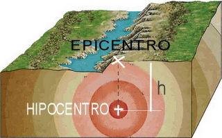
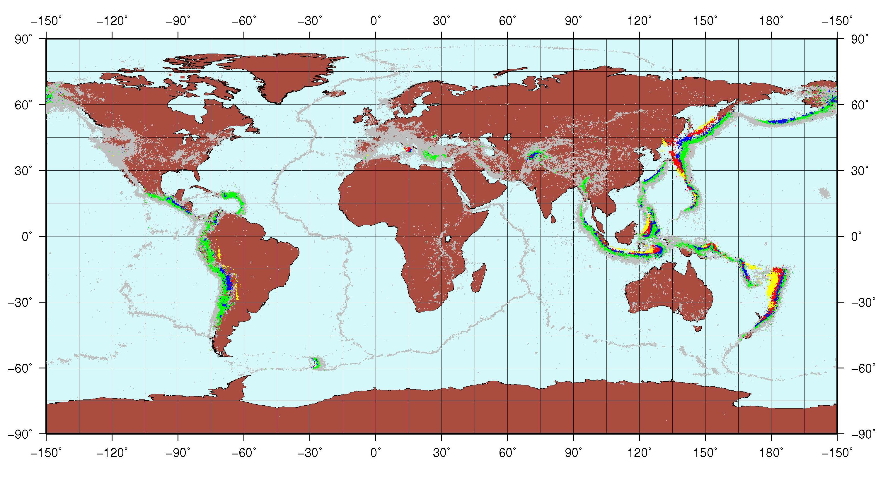
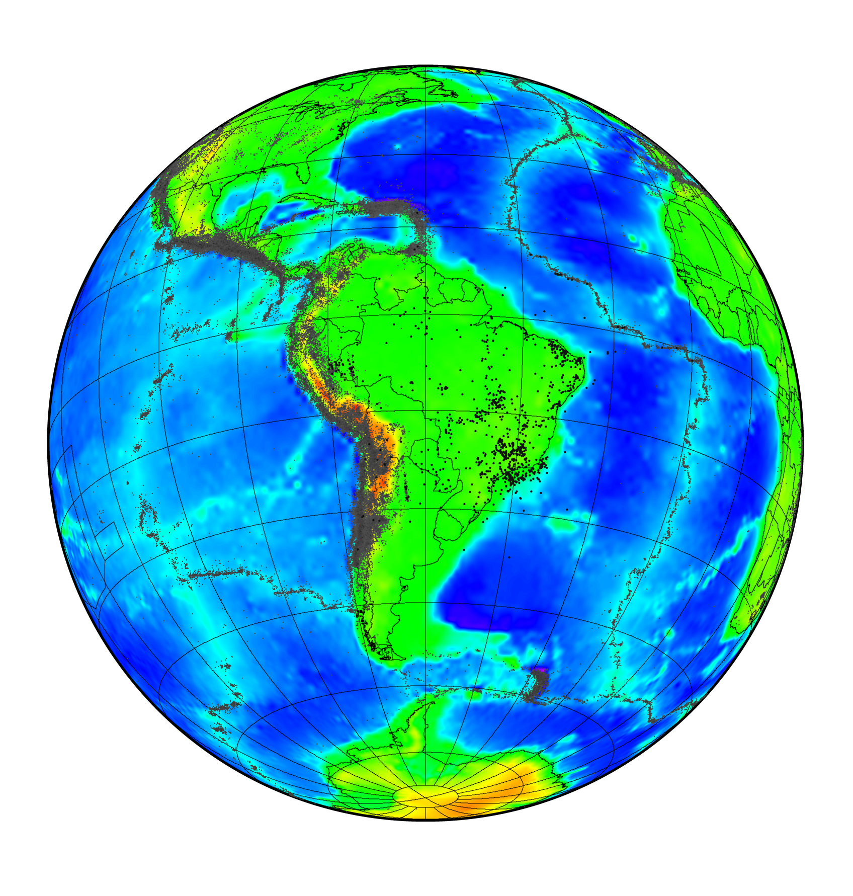
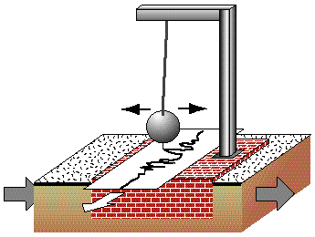

Geofísica Total!

Terremoto ou abalo sísmico é um movimento brusco e repentino do terreno resultante de um falhamento. Portanto, a ruptura de uma rocha é o mecanismo pelo qual o terremoto é produzido. Essa ruptura causa a liberação de uma grande quantidade de energia, a qual gera ondas elásticas que se propagam pela Terra em todas as direções.
As rochas comportam-se como corpos elásticos e podem acumular deformações quando submetidas a esforços de compressão ou de tração. Quando esse esforço excede o limite de resistência da rocha esta se rompe ao longo de um plano, novo ou pré-existente de fratura, chamado falha. Normalmente não é o deslocamento na fratura que causa maior estrago, mas sim as vibrações (ondas elásticas) que se propagam a partir da fratura. Na maior parte das vezes a fratura nem atinge a superfície, mas as vibrações podem ser fortes o suficiente para causar danos consideráveis. Hipocentro é o local que a ruptura das rochas acontece e o impacto na superfície terrestre difere tanto pela magnitude quanto pela profundidade desse epicentro.
As forças tectônicas que causam os sismos são devidas aos processos dinâmicos que ocorrem no interior da Terra, principalmente os lentos movimentos de convecção no manto, responsáveis pela deriva dos continentes.
Ainda não existe um modo de prever quando e onde irá acontecer um terremoto, porém é importante o monitoramento sísmico para estabelecer um histórico e saber quais pontos do planeta são mais suscetíveis a acontecer esses terremotos.
O mapa acima ilustra o hipocentro e epicentro de um terremoto.
 Fonte: Elaborados pelo autor Thales Cunha da Paixão. Registram todos os sismos com maior significância no mundo, o mapa 2 focado na América do Sul, são rasos a aproximadamente de 50 a 100 metros de profundidade e é possível visualizar as periferias das placas tectônicas (principalmente nazca e a sul-americana), onde os cinzas equivalem a 3 de magnitude, verdes 4 , amarelos 5 á , azuis 6 e vermelhos 7 à 8.
Sismógrafo é o aparelho que registra os movimentos do solo. É normalmente constituído de um sismômetro que é o transdutor que "percebe" os movimentos do solo e um registrador. O sismômetro basicamente funciona com uma massa suspensa por molas (ou um pêndulo). Quando o solo oscila a massa também balança, sendo então registrado o movimento relativo entre a massa e o solo. Uma característica importante do sismógrafo é a amplificação com que o movimento do solo é registrado. Esta amplificação é normalmente feita por meios ópticos ou eletrônicos. O registro do sismograma pode ser feito diretamente do papel a tinta, papel fotográfico, filme, fita magnética, etc.
odo sismógrafo deve ter também um relógio de precisão para que se possa saber exatamente a hora de chegada das várias ondas sísmicas. Atualmente os sismógrafos possuem relógios que marcam a hora Universal (GMT) com precisão melhor que 0,1s.
Sismógrafo de caso geral
Existem diversos tipos de ondas elásticas que são liberadas quando ocorre um terremoto. Os tipos mais importantes são:
As ondas P propagam-se pela crosta terrestre com velocidade típica de 6 a 8 km/s em rochas consolidadas; a velocidade das ondas S é tipicamente 0% a 70% da velocidade da onda P no material. Apesar da velocidade das ondas variar com as propriedades das rochas (densidade, rigidez, compressibilidade), a razão entre a velocidade das ondas P e S é praticamente constante. Isto permite que, observando o tempo de chegada destas ondas, possamos estimar a distância do local onde ocorreu o sismo (basta multiplicar o tempo S-P, em segundos, pela velocidade de 8 km/s para uma estimativa grosseira da distância entre o foco e a estação).
As ondas sísmicas são registradas por sismógrafos, equipamentos sensíveis que detectam e registram o movimento das partículas do solo em uma determinada direção. A diferença no tempo de chegada das ondas S e P pode fornecer a localização do epicentro do terremoto, se ele for adequadamente registrado por no mínimo três estações.
Esquematização do movimento de ondas liberadas em um terremoto.